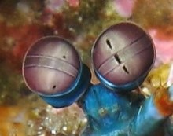

Fatos sobre o Stomatopoda
Informações gerais
Stomatopoda (Odontodactylus scyllarus), chamados popularmente de tamarutacas ou de lacraias-do-mar no Brasil, é uma ordem de crustáceos marinhos da subclasse Hoplocarida, que agrupa cerca de 400 espécies, caracterizadas principalmente pela morfologia da segunda pata torácica, que é modificada em apêndice subquelado, lembrando uma pata de louva-a-deus.
| Classificação científica | |
|---|---|
| Reino: | Animalia |
| Filo: | Crustacea |
| Classe: | Malacostraca |
| Subclasse: | Hoplocarida |
| Ordem: | Stomatopoda |
| Família: | Odontodactylidae |
| Género: | Odontodactylus |
| Espécie: | O. scyllarus |
Super Visão
Esses animais possuem o mais complexo sistema de visão de cores do mundo animal, pois enxergam 12 cores primárias, correspondentes aos 12 pigmentos distintos presentes em sua retina.
Nossos olhos possuem três tipos desses receptores - que correspondem à luz azul, verde e vermelha -, que nos permitem perceber o espectro de cores que vemos. Os cães contam com apenas dois tipos de cones (verde e azul), e é por isso que eles vêm tons de azul, verde e um pouco de amarelo. Muitos anfíbios, répteis, aves e insetos possuem quatro tipo de cones, o que significa que espécies dessas classes conseguem ver cores que o nosso cérebro é incapaz de processar. Algumas espécies específicas de borboletas e possivelmente pombos possuem cinco cones de percepção de cor, o que aumenta ainda mais a quantidade de pigmentos que eles são capazes de perceber. O sistema de visão dos estomatópodes possui 12 cones sensíveis à luz e outros quatro que filtram a luz (16 cones no total), assim, o arco-íris que elas enxergam deve ser uma verdadeira explosão termonuclear de cores, luz e beleza.
Boxeador dos mares

São capazes de desferir um dos mais rápidos e violentos golpes do reino animal, seu soco fora registrado com uma velocidade de 80 km/h e aceleração similar a uma arma calibre .22. A pressão exercida pelo soco é de 60 kg/cm². Essa força esmagadora é a responsável pelo seu título de "lagosta-boxeadora" e é capaz de facilmente quebrar a carapaça de um caranguejo, as conchas duras e calcificadas de gastrópodes ou até mesmo quebrar o vidro reforçado de um aquário.
Predador Letal

As lagostas-boxeadoras costumam ser encontradas próximo à costa de mares tropicais e subtropicais e são predadoras letais que se alimentam de caranguejos, camarões, moluscos e peixes. Na verdade, apesar de não serem muito grandes — entre 15 e 30 centímetros —, as tamarutacas são um verdadeiro pesadelo dos oceanos, sendo consideradas como um dos animais mais violentos do planeta.